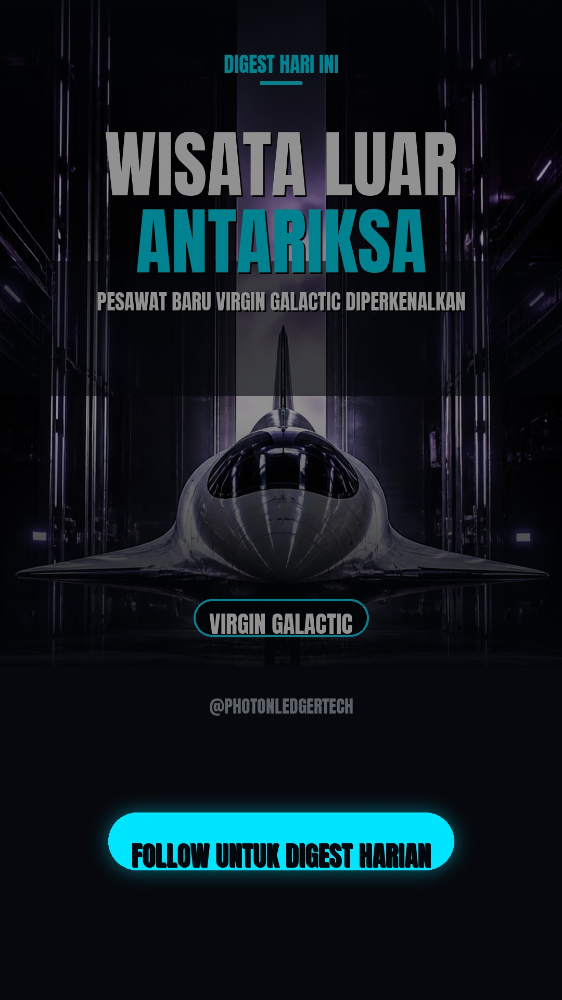
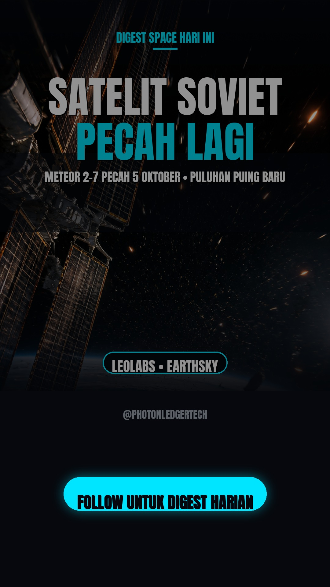
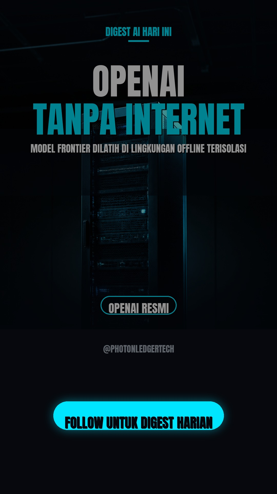

Artemis III SLS Core Stage Dipasang di Kennedy
Core stage roket SLS Artemis III (tinggi 212 kaki) resmi digabung dengan dua booster solid di Vehicle Assembly Building, Kennedy Space Center. Teknisi mengangkat bagian ini pada 28 Oktober sebagai tahap integrasi menuju misi pendaratan astronaut di Bulan.
📖 Pembahasan lengkap & poin utama
- Pada 28 Oktober, teknisi NASA menggabungkan core stage roket SLS Artemis III dengan dua booster roket padat di High Bay 3 Vehicle Assembly Building, Kennedy Space Center, Florida.
- Core stage SLS memiliki tinggi sekitar 212 kaki atau lebih dari 60 meter, dan menjadi tulang punggung utama roket paling kuat milik NASA.
- Konfigurasi gabungan core stage plus dua booster ini disebut short stack, yaitu tahap awal perakitan sebelum semua elemen disatukan penuh.
- Proses perakitan ini adalah kelanjutan dari pekerjaan bertahap sepanjang 2026, termasuk pemasangan empat mesin RS-25 ke core stage yang dimulai Agustus dan penyelesaian stacking booster yang diumumkan pertengahan Oktober.
- Artemis III adalah misi yang ditujukan untuk mendaratkan astronaut di permukaan Bulan, sehingga setiap tahap integrasi roket menjadi momen penting menuju peluncuran.
Spacewalk ISS Upgrade Listrik Disetujui
Manajer misi NASA menyetujui spacewalk Kamis untuk memasang array surya baru di truss sisi pelabuhan ISS, bagian dari upgrade daya stasiun. Spacewalk berikutnya dijadwalkan 29 Okt dan 5 Nov.
📖 Pembahasan lengkap & poin utama
- Manajer misi NASA memberikan lampu hijau pada 28 Oktober untuk spacewalk Kamis guna memasang array surya roll-out baru di truss sisi pelabuhan (port) ISS.
- Array surya baru yang dipasang adalah jenis roll-out yang digulung seperti karpet lalu dibentangkan di luar stasiun, sebuah teknologi yang dirancang untuk menambah pasokan listrik ISS.
- Jadwal aktivitas di luar stasiun berlanjut ketat: spacewalk berikutnya sudah dijadwalkan pada 29 Oktober dan 5 November.
- Pekerjaan ini bagian dari program upgrade daya stasiun yang bertujuan menggantikan atau menambah kapasitas panel surya asli ISS yang sudah menua.
- Ekipasi Expedition 75 menjalani persiapan robotik dan pemindahan peralatan dari dalam stasiun ke titik kerja di luar menjelang hari-H.
Radiasi di Dekat Bulan Lebih Tinggi dari Perkiraan
Analisis data misi Artemis I mengungkap radiasi kosmik dekat Bulan lebih tinggi dibanding orbit Bumi, meski tak sedrastis prediksi awal. Detektor eksperimental kecil turut mengungkap temuan tambahan soal paparan radiasi astronaut.
📖 Pembahasan lengkap & poin utama
- Penelitian baru yang dianalisis dari misi Artemis I 2022 menunjukkan radiasi kosmik di dekat Bulan lebih tinggi daripada di orbit rendah Bumi, namun kenaikannya tidak sedrastis prediksi awal para ilmuwan.
- Data diambil dari lebih dari 10.000 kristal detektor kecil berbahan lithium fluorida yang ditanam di dalam dua boneka manekin berbentuk manusia di kapal Orion.
- Puluhan detektor eksperimen di antaranya dibuat oleh Institut Fisika Nuklir Polish Academy of Sciences (IFJ PAN) di Krakow, ditambah hampir 600 detektor termoluminesen dari institut yang sama.
- Detektor ini bekerja seperti film fotograf: partikel radiasi meninggalkan jejak mikroskopis di kristal, lalu dianalisis di bawah mikroskop fluoresensi setelah misi berakhir.
- Temuan ini tercatat dalam eksperimen MARE (Matroshka AstroRad Radiation Experiment) dan dipublikasikan di jurnal Radiation Measurements, memberikan data perbandingan pertama yang kaya soal paparan radiasi di dua lingkungan berbeda.
- Manekin tempat detektor dipasang meniru tubuh manusia sehingga peneliti bisa melihat bagaimana radiasi menembus dan terdistribusi di dalam tubuh astronaut.
Google Rilis Gemini 4 Carbon, Langsung #1 Leaderboard
Gemini 4 Carbon diumumkan 28 Oktober dengan skor 59 di Artificial Analysis Intelligence Index v5 (#1 dunia), 88,2% di SEC-bench Pro untuk deteksi kerentanan siber. Harga $2/$10 per 1M token (naik ke $4/$20 setelah masa promo), akses awal terbatas untuk tim keamanan siber via Fairwind Program.
📖 Pembahasan lengkap & poin utama
- Gemini 4 Carbon mencetak skor 59 di Artificial Analysis Intelligence Index v5, menjadikannya model nomor satu dunia pada indeks tersebut per 28 Oktober.
- Di indeks coding agent Artificial Analysis, Carbon hanya kalah 3 poin dari Claude Opus 5.5 (59 vs 62), dengan peringkat kedua di Terminal-Bench 4.0 (64%) dan FrontierCode v1.1 (51%).
- Model ini memimpin 4 dari 9 evaluasi dalam indeks, yaitu HLE-Diamond, Terminal-Bench-Science, AA-Omniscience, dan AutomationBench-AA, dengan bidang terkuat di reasoning kompleks, pengetahuan, dan tugas sains.
- Harga standar API-nya $4 per 1 juta token input dan $20 per 1 juta output, sama seperti Gemini 4 Argon, dengan diskon peluncuran 50% yang membuatnya efektif $2/$10; setelah masa promo habis harga kembali ke tarif penuh.
- Untuk tugas keamanan siber, Google membuka akses awal terbatas melalui program Fairwind bagi tim keamanan siber, dan model ini mencatat 88,2% di benchmark SEC-bench Pro untuk deteksi kerentanan.
- Dengan biaya sekitar $7,76 per tugas Intelligence Index, Carbon sekitar 23% lebih murah dari Claude Opus 5.5 ($10,04) sambil memakai token output 29% lebih sedikit.
OpenAI Luncurkan GPT-6.1 Terra
Model baru fokus visual reasoning dan computer use ini rilis 26 Oktober, tersedia untuk semua pengguna ChatGPT Plus/Pro/Enterprise/Edu dan API sebagai `gpt-6.1-terra`, dibanderol $1/$5 per 1M token — lebih murah dari Terra sebelumnya.
📖 Pembahasan lengkap & poin utama
- GPT-6.1 Terra rilis 26 Oktober dan tersedia untuk semua pengguna ChatGPT Plus, Pro, Enterprise, dan Edu di ChatGPT Work dan Codex, plus API dengan nama model gpt-6.1-terra.
- Harga API-nya $1 per 1 juta token input dan $5 per 1 juta token output, atau 50% lebih murah dari GPT-5.6 Terra dan GPT-6.1 Sol sebelumnya.
- Di benchmark Agents' Last Exam yang menguji kemampuan computer use profesional, Terra menyusut 15 poin persentase lebih baik dari GPT-5.6 Terra dengan biaya sekitar sepertiganya.
- Angka error pada prompt yang mudah menggiring kesalahan anjlok dari 53,6% (GPT-5.6 Terra) menjadi 16,7% pada effort reasoning rendah, dan sampai 4,3% pada effort maksimal.
- Di Terminal-Bench 4.0 untuk tugas coding agent di terminal, Terra menyelesaikan 50,3% tugas, lebih dari dua kali lipat skor 21,5% milik GPT-5.6 Terra.
- OpenAI menyebut Terra menyelesaikan tugas lebih dari tiga kali lebih cepat dibanding GPT-6 Astra maupun GPT-6.1 Sol, dan tahan terhadap uji prompt injection sesuai evaluasi keamanannya.
DeepMind Rilis Genie 4, World Model Interaktif
Genie 4 bisa menghasilkan dunia simulasi real-time lengkap dengan musik, suara ambient, dan dialog, serta bisa diarahkan via bahasa natural saat berjalan. Baru tersedia sebagai research preview untuk Google AI Ultra dan mitra awal Gemini API.
📖 Pembahasan lengkap & poin utama
- Genie 4 diumumkan Google DeepMind pada 27 Oktober 2026 sebagai world model dengan realisme dan simulasi interaktif real-time yang paling maju dari generasi sebelumnya.
- Model ini secara native multimodal: audio berupa musik, suara ambient, dan dialog interaktif dihasilkan bersamaan dengan dunia visualnya, bukan ditambahkan belakangan.
- Genie 4 dibangun di atas kapabilitas keluarga Gemini — Gemini Omni menjadi jangkar tampilan dan perilaku dunia, sementara model Gemini lain menyediakan reasoning untuk menjaga koherensi simulasi.
- Pengguna bisa mengendalikan simulasi secara langsung dengan keyboard untuk navigasi dan kamera, lalu mengubah jalannya dunia lewat prompt teks saat simulasi masih berjalan.
- Sa ini tersedia sebagai research preview untuk trusted tester, dengan rencana perluasan ke pelanggan Google AI Ultra lewat Project Genie serta mitra awal Gemini API dan Google AI Studio.
- DeepMind memposisikan teknologi ini bukan sekadar hiburan, melainkan fondasi penting menuju AGI, termasuk untuk melatih robot dan agen AI di lingkungan simulasi yang aman dan tak terbatas variasinya.

SpaceX uji nyala 33 mesin Super Heavy demi "double catch" Starship
Booster 22 untuk Starship Flight 15 berhasil static-fire penuh 33 mesin Raptor selama 16 detik di Starbase, Texas (25 Okt). Elon Musk menargetkan upaya pertama di dunia menangkap booster DAN ship sekaligus dengan menara peluncur pada November 2026 — jika sukses, jadi roket orbital pertama yang full-recovered.
📖 Pembahasan lengkap & poin utama
- Booster 22 untuk misi Starship Flight 15 berhasil menjalankan static-fire seluruh 33 mesin Raptor 3 selama sekitar 15-16 detik penuh di Starbase, Texas, pada 25 Oktober.
- Uji ini digelar tiga hari setelah Elon Musk menyatakan dalam earnings call 20 Oktober bahwa Flight 15 akan mencoba menangkap booster DAN ship sekaligus dengan lengan mekanis menara peluncur.
- Booster 22 nantinya dipasangkan dengan upper stage Ship 42, yang masih harus menyelesaikan uji mesin sendiri sebelum keduanya siap diluncurkan.
- Gwynne Shotwell, presiden dan COO SpaceX, menilai lisensi FAA untuk Flight 15 akan mencakup kembali ke tempat peluncur dan penangkapan kedua tahap roket.
- Jika penangkapan ganda berhasil, Starship akan menjadi kendaraan peluncur orbital pertama yang pulang utuh dan pulih sepenuhnya, membuka jalan menuju reusabilitas penuh.
- Jendela peluncur Flight 15 diperkirakan pertengahan hingga akhir November 2026, meski tanggal resmi belum diumumkan.
Astroscale usul armada satelit "bodyguard" lawan serangan orbital
Perusahaan debris-removal Astroscale mengajukan konsep armada pesawat ruang angkasa pelindung, memakai teknologi pembersih sampah antariksa yang dimodifikasi untuk menjaga satelit penting dari serangan musuh di orbit.
📖 Pembahasan lengkap & poin utama
- Alex Godfrey, kepala divisi pertahanan Astroscale, menyatakan satelit pelindung bisa siap diluncurkan dalam waktu kurang dari tiga tahun.
- Konsep ini memodifikasi teknologi docking presisi milik perusahaan — yang biasa dipakai menangkap sampah antariksa atau mengisi bahan bakar satelit — untuk mencegat satelit musuh yang mendekat berbahaya.
- Biaya satu misi bodyguard diklaim hanya sekitar satu persen dari nilai konstelasi komunikasi militer seperti Skynet milik Inggris yang senilai £8,4 miliar.
- Godfrey mengusulkan armada patroli pan-Eropa: satu satelit pelindung menjaga dua-tiga aset sekutu di satu wilayah, negara lain mengambil alih di wilayah berbeda — analogi kapal induk yang selalu diiringi eskor kecil.
- Usulan ini muncul di tengah kekhawatiran soal satelit Rusia yang memantau radar satelit Barat dan indikasi uji antisatelit yang terlihat berbulan-bulan di orbit.
- Astroscale mengaku sudah berdiskusi dengan perusahaan dan pelanggan di seluruh Eropa, tetapi belum ada kontrak yang ditandatangani; pemerintah Inggris menjanjikan pendanaan pengembangan pengendalian ruang angkasa mulai 2030.
OpenAI rilis GPT-6.1 Terra, harga API turun 50%
Model baru fokus computer-use & visual reasoning ini mencetak skor 15 poin lebih tinggi dari GPT-5.6 Terra di Agents' Last Exam dengan biaya sepertiganya. Error rate pada prompt sulit turun drastis dari 53,6% jadi 16,7%; di Terminal-Bench 4.0 selesaikan 50,3% tugas (vs 21,5% versi lama). Harga: $1/juta token input, $5/juta output.
📖 Pembahasan lengkap & poin utama
- GPT-6.1 Terra rilis 26 Oktober, tersedia untuk semua pengguna ChatGPT Plus, Pro, Enterprise, dan Edu di ChatGPT Work dan Codex, serta via API dengan nama gpt-6.1-terra.
- Di Agents' Last Exam (benchmark tugas komputer profesional), Terra mencetak skor 15 poin persentase lebih tinggi dari GPT-5.6 Terra dengan biaya hanya sepertiganya.
- Error rate pada prompt sulit anjlok dari 53,6% menjadi 16,7%, dan di Terminal-Bench 4.0 model ini menyelesaikan 50,3% tugas dibanding 21,5% pada versi sebelumnya.
- Harga API standar: $1 per juta token input, $0,05 per juta token input yang di-cache, dan $5 per juta token output — 50% lebih murah dari GPT-5.6 Terra.
- OpenAI mengklaim Terra setara performa dengan model frontier GPT-6 Astra di beberapa tugas komputer, tapi hanya sepersepuluh harganya per token dan lebih dari tiga kali lebih cepat menyelesaikan tugas.
- Fokus model ini adalah visual reasoning dan computer use: membaca gambar teknis, mengisi formulir, mengoperasikan aplikasi desktop, serta menulis yang lebih natural.
Alibaba luncurkan Qwen3.8-27B untuk laptop, tanpa cloud
Model 27B parameter ini diklaim setara performa model 10x lebih besar, jalan langsung di laptop kelas atas. Qwen-based models kini punya 151.448 turunan di Hugging Face — 2,6x lipat total jejak Meta, memperketat persaingan open-weight global.
📖 Pembahasan lengkap & poin utama
- Qwen3.8-27B adalah model open-weight 27 miliar parameter yang diklaim Alibaba setara performa model 10x ukurannya di bidang coding, riset, pekerjaan profesional, dan tugas agen jangka panjang.
- Model ini menggantikan Qwen3.6-27B, berlisensi Apache 2.0, punya konteks 262.144 token, pemahaman gambar dan video bawaan, serta berjalan di satu GPU konsumen — sekitar 17 GB saat kuantisasi 4-bit.
- Bersamaan dengan itu, Alibaba membuka bobot Qwen3.8 Max, model terkuatnya, yang bisa diunduh dan dijalankan gratis.
- Data Hugging Face mencatat model berbasis Qwen kini punya 151.448 turunan — 2,6 kali lipat total jejak Meta di platform yang sama.
- Peluncuran ini menjawab langkah Meta yang seminggu sebelumnya mengumumkan model laptop-ready bernama Muse Glimmer (30 miliar parameter) dan rencana open-source model terkuatnya.
- Qwen3.8-27B menghabiskan 3 juta unduhan di Hugging Face hanya dalam tiga hari dan menjadi model paling trending di platform itu.

Moonshot AI merilis Kimi K3.1 Pro, model open-weight 2.8T parameter dengan konteks 1 juta
token, unggul di benchmark coding/agentic meski open weights baru rilis November — SiliconANGLE, agent5.news.
📖 Pembahasan lengkap & poin utama
- Kimi K3.1 Pro adalah model arsitektur mixture-of-experts kelas 3 triliun parameter, dengan 2,8 triliun total parameter dan sekitar 104 miliar yang aktif per langkah inferensi.
- Model ini membawa context window 1 juta token, cukup untuk menelan kodebasis besar atau tumpukan dokumen finansial dalam satu percakapan.
- Di indeks Artificial Analysis Intelligence Index, K3.1 Pro debut di posisi ke-4 dunia dengan skor 55, naik 11 poin dari pendahulunya Kimi K3, dan hanya terpaut sekitar satu poin dari Claude Opus 5.5 pada benchmark coding agentic.
- Moonshot juga merilis varian K3.1 Pro Highspeed yang diklaim 2-3 kali lebih cepat untuk penggunaan API.
- Bobot model versi lengkap dijanjikan akan dibuka pada 4 November 2026, sehingga siapa pun bisa mengunduh dan menjalankannya sendiri.
- Model ini digambarkan multimodal dengan pemahaman visual native, dan diklaim kuat untuk coding, pembuatan konten 3D, serta riset finansial.
Google Gemini 4 Argon kini tersedia global sebagai model frontier terkuat Google, dengan
API output limit 1M token — ZeroHour.
📖 Pembahasan lengkap & poin utama
- Gemini 4 Argon diposisikan Google sebagai model frontier barunya, unggul untuk tugas coding kompleks, pekerjaan enterprise seperti hukum dan keuangan, serta pertahanan siber.
- Model ini kini tersedia global lewat Gemini API dan AI Studio, untuk pengguna Google AI Ultra di Antigravity, serta pelanggan AI Ultra dan Pro di aplikasi Gemini dan AI Mode di Search.
- Batas output token dinaikkan dari 64 ribu menjadi 1 juta token, diklaim sebagai yang tertinggi di industri untuk satu respons model.
- Harga intro $2 per 1 juta token input dan $10 per 1 juta token output, dengan token input yang di-cache dipotong hingga 95%.
- Sebagian kemampuan model diluncurkan bertahap: akses awal untuk pembela siber terpilih lewat program Fairwind, sementara Google mengikuti proses akses pra-rilis sukarela bersama pemerintah AS.
- Di benchmark domain, model ini dilaporkan memimpin pada Harvey's Legal Agent Benchmark untuk riset dan penyusunan dokumen hukum.
Bitcoin stagnan di kisaran $80.000 setelah ETF spot BTC catat inflow mingguan $304,77
juta, sementara dominasi BTC mencapai 57%, tertinggi sejak November 2022 — Coinotag/NewsNow.
📖 Pembahasan lengkap & poin utama
- ETF spot Bitcoin di AS mencatat net inflow mingguan $304,77 juta, meski ada satu hari dengan outflow $635,49 juta — yang terbesar sejak akhir Juni.
- Bitcoin sendiri bergerak stagnan di kisaran $80.000, tak mampu menembus ke atas meski ada arus masuk institusi.
- Dominasi BTC — porsi kapitalisasi pasar Bitcoin terhadap seluruh kripto — mencapai 57%, level tertinggi sejak November 2022.
- Dominasi setinggi itu menandakan investor menarik uang dari altcoin dan memarkirnya di Bitcoin, di tengah ketidakpastian makro dan geopolitik.
- Arus keluar besar dalam sehari menunjukkan sentimen institusi masih rapuh: masuk dan keluar cukup dalam minggu yang sama.
FCA Inggris usulkan pengecekan wallet pribadi dalam panduan kripto non-mengikat
sementara Kanada ajukan konsultasi 60 hari soal stablecoin dengan tetap melarang yield — CryptoSlate.
📖 Pembahasan lengkap & poin utama
- FCA, regulator keuangan Inggris, memasukkan due diligence untuk transfer ke unhosted wallet (dompet pribadi di luar bursa) sebagai praktik baik dalam draf panduan konsultatif yang bersifat non-mengikat.
- Draf panduan FCA juga mengkritik skor risiko pihak ketiga yang tidak bisa dijelaskan dan aturan pelacakan transaksi yang kaku.
- Konsultasi FCA dibuka 21 Oktober 2026 dan ditutup 18 November 2026, terkait perluasan perimeter regulasi kripto yang berlaku efektif mulai 25 Oktober 2027.
- Kanada membuka konsultasi publik 60 hari (berakhir 23 Desember) untuk draf aturan stablecoin non-bank, menyusul Stablecoin Act yang disetujui pada Maret 2026.
- Draf aturan Kanada melarang penerbit stablecoin membayar imbal hasil (yield) ke pemegang token dan mewajibkan penerbit non-bank menyimpan cadangan di lembaga keuangan Kanada.
- Aturan Kanada juga mengharuskan penerbit menukarkan stablecoin kembali ke uang fiat dalam tiga hari kerja tanpa minimum penukaran.
SpaceX menjalankan static-fire booster Super Heavy B22 (25 Okt) sebagai persiapan
Starship Flight Test 15 — Space.com.
📖 Pembahasan lengkap & poin utama
- Static fire dilakukan Minggu, 25 Oktober 2026, di Starbase, Texas, dengan Super Heavy Booster 22 (B22) yang ditetapkan untuk Starship Flight Test 15.
- Seluruh 33 mesin Raptor menyala secara bersamaan dalam uji full-duration, sesuai konfirmasi resmi SpaceX berikutnya.
- Uji ini menjadi bagian rangkaian kampanye uji darat terakhir sebelum roket dipasangkan dengan kapal luar angkasanya (ship) untuk penerbangan.
- Ship pendamping booster, S42, masih menjalani rangkaian pengujian tersendiri.
- Flight Test 15 berikutnya ditargetkan mencoba manuver penangkapan booster kembali oleh menara launch tower, memperluas kesuksesan teknik 'chopstick catch' SpaceX.
NASA rilis data & citra sains Artemis II, serta memaparkan rencana uji terbang lander
bulan Artemis III meski tanggal pasti belum diumumkan — Space.com/NASA Science.
📖 Pembahasan lengkap & poin utama
- NASA merilis data dan citra sains dari misi Artemis II, termasuk foto Bulan, rekaman audio, catatan pengamatan, dan sketsa yang dibuat awak di dalam kapsul Orion.
- Artemis II diluncurkan April 2026 dan menjadi penerbangan berawak pertama wahana Orion, menempuh perjalanan hampir 10 hari mengitari Bulan sebelum mendarat kembali di Samudra Pasifik pada 10 April.
- Awak Artemis II terdiri dari empat astronaut yang bergantian memotret, memberi anotasi, dan merekam pengamatan ilmiah selama flyby Bulan di hari keenam misi.
- Rilis ini dikemas sebagai Artemis II Preliminary Lunar Science Report, dokumen ilmiah awal yang bisa diakses publik.
- NASA juga memaparkan rencana uji terbang terkait operasi lander bulan untuk Artemis III, yang akan membawa empat astronaut menguji sistem kritis untuk pendaratan Bulan berikutnya — tetapi tanggal peluncuran pasti belum diumumkan.
Kapasitas energi terbarukan Korea Selatan melampaui batu bara untuk pertama kalinya
mencapai 41.040 MW per 21 Oktober — geoharvey.com.
📖 Pembahasan lengkap & poin utama
- Per 21 Oktober 2026, kapasitas terpasang energi terbarukan Korea Selatan mencapai 41.040 MW, mengalahkan batu bara yang berada di 40.757 MW — selisih tipis 283 MW.
- Ini pertama kalinya terbarukan melampaui batu bara sejak pencatatan, menjadikannya sumber kapasitas terbesar kedua setelah LNG (46.788 MW).
- Terbarukan kini menyumbang 25,4% dari total kapasitas pembangkit terpasang negara itu.
- Pertumbuhan kapasitas terbarukan rata-rata sekitar 3.504 MW per tahun (2020-2025), sekitar 4,3 kali lipat laju penambahan kapasitas LNG.
- Kalau tren berlanjut, Korea Power Exchange memperkirakan terbarukan bisa melampaui LNG dalam dua-tiga tahun dan jadi sumber kapasitas terbesar.
- Catatan penting: angka ini merujuk kapasitas terpasang, bukan jumlah listrik yang benar-benar dibangkitkan — faktor kapasitas surya dan angin lebih rendah dari pembangkit termal.
Solar mendorong pangsa terbarukan Australia (NEM) ke rekor 80,4% pada Q3 2026, sekaligus
menekan harga listrik grosir ke level terendah 5 tahun — reneweconomy.com.au.
📖 Pembahasan lengkap & poin utama
- Pangsa energi terbarukan dan penyimpanan dalam pembangkitan listrik National Electricity Market (NEM) Australia mencapai rekor 80,4% pada kuartal tiga 2026.
- Surya menjadi mesin utama: solar atap (rooftop) memimpin, sementara solar skala utilitas dan terdistribusi sama-sama mencetak rekor output baru.
- Harga listrik grosir turun ke level terendah lima tahun, terbantu kombinasi solar atap, baterai rumah, angin, solar skala besar, dan penyimpanan energi.
- Pencapaian ini terjadi meski permintaan listrik riil NEM mencetak rekor tertinggi selama kuartal musim dingin.
- Data berasal dari penilaian kuartalan AEMO (Q3 2026) serta laporan pasar energi Australia yang juga mencatat rencana investasi besar lanjutan.
Sorotan hari ini: Bitcoin tertahan di $80K dengan dominasi pasar tertinggi sejak
2022, di tengah tekanan makro dan geopolitik yang masih membayangi seluruh pasar kripto.

Google resmi merilis Gemini 4 Argon secara global via API, diklaim model frontier paling
mumpuni mereka dengan batas output hingga 1 juta token. Sumber: ZeroHour — https://zerohour.day/ai
📖 Pembahasan lengkap & poin utama
- Gemini 4 Argon resmi tersedia global via API di AI Studio dan Gemini platform, serta untuk pelanggan Google AI Ultra di aplikasi Gemini, AI Mode di Search, dan Google Antigravity.
- Google mengklaim Argon unggul untuk pekerjaan kompleks multi-langkah di bidang coding, keuangan, hukum, keamanan siber, dan sains.
- Model ini menduduki peringkat #1 di Vals Index, benchmark yang mengukur performa model di sektor ekonomi kritis seperti keuangan, coding, hukum, dan pajak.
- Harga perkenalan: $2 per juta token input dan $10 per juta token output, dengan token input dari cache didiskon 95%.
- Batas output hingga 1 juta token menjadikannya cocok untuk pekerjaan dokumen panjang dan analisis berskala besar.
Moonshot AI meluncurkan Kimi K3.1 Pro, model MoE raksasa 2,8 triliun parameter (104B
aktif) dengan konteks 1 juta token; bobot model open-source menyusul 4 November. Sumber: AivexaNews — https://aivexanews.com/category/model-releases
📖 Pembahasan lengkap & poin utama
- Kimi K3.1 Pro adalah model MoE (Mixture of Experts) dengan total 2,8 triliun parameter, sekitar 104 miliar di antaranya aktif per inferensi, plus jendela konteks 1 juta token.
- Model ini adalah versi post-trained dari Kimi K3, dilatih ulang dengan reinforcement learning di ratusan domain, khususnya coding, pembuatan 3D, dan riset finansial.
- Di benchmark coding berbasis terminal, Moonshot mengklaim K3.1 Pro hanya tertinggal kurang dari 1 poin dari Claude Opus 5.5 dan mengalahkan GPT-6 Astra.
- Model sudah aktif di aplikasi Kimi, Kimi Code, dan Kimi API; bobot open-weight penuh menyusul pada 4 November 2026.
- Moonshot sengaja membuang data pelatihan terkait keamanan siber sebelum rilis open-weight.
- Ada varian cepat bernama K3.1 Pro Highspeed untuk kasus yang butuh latensi rendah.
Bitcoin sempat jatuh di bawah $80.000 usai ETF spot BTC AS catat outflow $636 juta dalam
sehari, lalu reclaim $84.500 setelah OCC resmi finalisasi aturan stablecoin GENIUS Act (berlaku Januari 2027). Sumber: crypto.news — https://crypto.news/tag/regulation/
📖 Pembahasan lengkap & poin utama
- ETF spot Bitcoin di AS mencatat outflow bersih $636 juta dalam sehari, menghapus inflow hari sebelumnya.
- Tekanan jual ini membuat harga Bitcoin sempat turun di bawah level psikologis $80.000.
- Harga kemudian pulih dan reclaim $84.500 setelah berita regulasi positif keluar.
- OCC (Office of the Comptroller of the Currency) resmi menerbitkan final rule implementasi GENIUS Act untuk stablecoin pembayaran, berlaku 18 Januari 2027.
- Aturan itu mengikat bank nasional, federal savings associations, cabang asing, penerbit stablecoin nonbank yang disetujui federal, serta penerbit stablecoin asing yang beroperasi di yurisdiksi OCC.
Solana mengaktifkan upgrade Alpenglow di mainnet (21 Okt), mempercepat finality transaksi
dari 12,8 detik menjadi sekitar 150 milidetik. Sumber: crypto.news — https://crypto.news/crypto-rules-bitcoin-solana-weekly-recap/
📖 Pembahasan lengkap & poin utama
- Alpenglow diaktifkan di Solana mainnet pada 21 Oktober 2026, bertepatan dengan awal epoch 1064.
- Finalitas transaksi dipangkas dari sekitar 12,8 detik menjadi target sekitar 150 milidetik — percepatan hingga 99%.
- Perubahan intinya: suara validator dipindahkan keluar dari chain (off-chain votes), sehingga blok bisa difinalisasi jauh lebih cepat.
- Biaya per-vote yang lama diganti dengan fee flat 0,8 SOL per epoch untuk validator.
- Upgrade ini digarap Anza, tim pengembang inti Solana, dan sudah diuji di community test cluster sejak Mei 2026 dengan sekitar 100 validator independen — termasuk beberapa kali gagal migrasi dan satu rollback sebelum akhirnya sukses.
- Bagi pengguna DeFi dan trader, finalitas 150ms membuat pengalaman on-chain nyaris seperti transaksi server sentral.
NASA & SpaceX meluncurkan Crew-13 ke ISS membawa 4 astronot dari 3 negara untuk misi ~6
bulan, sementara Crew-12 baru splashdown setelah 7 bulan bertugas. Sumber: NASA — https://www.nasa.gov/directorates/space-operations/space-operations-news/
📖 Pembahasan lengkap & poin utama
- Misi Crew-13 diluncurkan NASA bersama SpaceX menggunakan wahana Dragon untuk mengantar 4 astronot ke ISS.
- Kru-nya terdiri dari 4 astronot yang mewakili 3 negara — melanjutkan tradisi misi multinasional di ISS.
- Misi ini direncanakan berlangsung sekitar 6 bulan di stasiun.
- Bareng peluncuran itu, kru Crew-12 menjalani splashdown atau pendaratan di laut setelah sekitar 7 bulan bertugas di orbit.
- Rotasi kru ini menjaga keberadaan manusia tanpa henti di ISS sejak tahun 2000.
NASA menggelar konferensi pers soal update misi Artemis III & IV, termasuk target baru
pendaratan ulang ke bulan pada 2028. Sumber: Economic Times — https://economictimes.indiatimes.com/news/spacex
📖 Pembahasan lengkap & poin utama
- Konferensi pers bertajuk 'Artemis Acceleration' digelar Jumat, 23 Oktober, disiarkan langsung dari Kennedy Space Center, Florida, pukul 14.00 EDT.
- Tiga pejabat top NASA memaparkan: Administrator Jared Isaacman, Associate Administrator Amit Kshatriya, dan Manager Program Artemis Jeremy Parsons.
- Artemis III ditargetkan pertengahan 2027: 4 astronot ke orbit bulan untuk menguji rendezvous dan docking antara kapsul Orion dengan lander swasta.
- Artemis IV diproyeksikan mendaratkan astronot di Kutub Selatan Bulan pada awal 2028 — pendaratan berawak pertama sejak Apollo 17 tahun 1972.
- NASA bermitra dengan SpaceX (Starship) dan Blue Origin (Blue Moon), tapi pilihan lander untuk Artemis IV belum diputuskan.
- Rencana jangka panjangnya membangun pangkalan permanen di Bulan, di tengah persaingan dengan program bulan Tiongkok.
Nordex menembus pasar turbin angin Selandia Baru dengan order 192 MW dari utilitas
Mercury untuk ladang angin di Pulau Selatan, plus kontrak servis 30 tahun. Sumber: Renewable Energy Industry — https://www.renewable-energy-industry.com/news/world
📖 Pembahasan lengkap & poin utama
- Nordex Group menerima order pertamanya dari Selandia Baru: Mercury memesan 40 turbin N133/4.8 dengan total kapasitas 192 MW.
- Proyeknya adalah ladang angin Puke Kapo Hau di kaki timur Lammermoor Range, wilayah Otago, Pulau Selatan, dengan kecepatan angin rata-rata di atas 8 meter per detik.
- Nordex dan Mercury menandatangani perjanjian servis komprehensif selama 30 tahun.
- Pemasangan turbin pertama pada menara baja tubular setinggi 90 meter dijadwalkan awal 2028, dengan komisioning unit pertama pertengahan 2028.
- Mercury mencatat sudah membangun 5 dari 6 ladang angin yang dibangun di Selandia Baru dalam lima tahun terakhir.
- Nordex akan memakai kontraktor lokal untuk jasa crane, pemasangan turbin, dan pekerjaan akhir sebagai bagian dari pembangunan kapabilitas di negara itu.
Fraunhofer ISE (Jerman) klaim sel baterai litium berbasis silikon tetap mempertahankan
>83% kapasitas setelah 1.000 siklus penuh, langkah maju untuk baterai berumur panjang. Sumber: Renewable Energy Industry — https://www.renewable-energy-industry.com/news/world
📖 Pembahasan lengkap & poin utama
- Dalam proyek 'StrOboBatt', Fraunhofer ISE mengoperasikan sel pouch buatan sendiri berkapasitas 25 Ah dengan anoda kaya silikon selama lebih dari 1.000 siklus penuh.
- Sel-sel itu mempertahankan lebih dari 83% kapasitas awal — di atas ambang 80% yang jadi target kunci industri.
- Kepadatan energi gravimetri mencapai 280 Wh/kg di format sel riset PrecISE, dan sekitar 330 Wh/kg diproyeksikan untuk format pouch industri yang teroptimasi.
- Anodanya pakai komposit silikon-karbon (51% dari materi aktif anoda) dengan kapasitas spesifik di atas 1.000 mAh/g, dipadukan katoda oksida nikel-kaya.
- Silikon punya kapasitas spesifik teoretis 10 kali lebih tinggi dari grafit yang dipakai saat ini, dan bisa mengurangi ketergantungan global pada grafit — membuka peluang rantai pasok di Uni Eropa.
- Sel multilapis 40 layer dibuat di lini produksi semi-otomatis cleanroom milik Fraunhofer ISE memakai foil elektroda komersial.
Sorotan hari ini
olana resmi mengaktifkan upgrade Alpenglow, memangkas finality transaksi ke ~150ms — langsung relevan buat strategi scalping Kafa di jaringan Solana.

Moonshot AI merilis Kimi K3.1 Pro, model 2.8T parameter dengan konteks 1M token, mampu
coding proyek penuh & pemodelan 3D — bobot terbuka menyusul 4 November. (AI Briefing, aiapphunters.com/news)
📖 Pembahasan lengkap & poin utama
- Kimi K3.1 Pro adalah model arsitektur Mixture-of-Experts dengan total 2,8 triliun parameter, tapi hanya 104 miliar yang aktif per permintaan sehingga biaya komputasi tetap terkendali.
- Model ini punya jendela konteks 1 juta token dan bersifat multimodal, plus varian lebih cepat bernama K3.1 Pro Highspeed.
- Moonshot menargetkan kemampuan coding proyek utuh — termasuk membuat game di Unreal, Unity, dan Godot — serta pemodelan 3D parametrik di Blender dan CAD.
- Dalam pekerjaan keuangan, Moonshot klaim tingkat halusinasi turun 65% dibanding versi sebelumnya.
- Pada benchmark coding, agentic, dan pengetahuan, model ini diklaim setara dengan Claude Opus 5.5 dan GPT-6 Astra, dengan harga yang lebih murah.
- Bobot lengkap dijadwalkan terbuka untuk publik pada 4 November 2026; Moonshot bahkan sengaja menghapus data serangan siber dari pelatihan agar kemampuan hacking model tidak tersebar bebas.
OpenAI membuka Decisions API (respons 100-180ms) untuk semua pelanggan, versi cepat dari model ChatGPT Luna
aiapphunters.com/news)
📖 Pembahasan lengkap & poin utama
- Decisions API resmi masuk tahap ketersediaan umum (GA) dan memakai model gpt-6-luna, satu-satunya model yang didukung saat ini.
- OpenAI mengklaim API ini memproses teks, gambar, dan data terstruktur hingga 10 kali lebih cepat dibanding memakai GPT-6 Luna lewat Responses API biasa.
- Cara kerjanya sederhana: pengembang mendefinisikan pertanyaan dan pilihan jawabannya, lalu API mengembalikan salah satu dari tiga tipe hasil — probabilitas, pilihan, atau skor.
- Perusahaan layanan pelanggan Sierra melaporkan pemakaian di bawah 280 ms (p95), sekitar 3 kali lebih cepat dan 90% lebih murah per panggilan dibanding pendekatan lamanya.
- Dalam integrasi GPT-Live untuk pembelajaran bahasa, waktu antar aksi terpangkas lebih dari 90%, dari 1,4 detik menjadi 0,13 detik.
- Harganya sangat murah untuk ukuran AI: $0,10 per juta token input, dan hanya $0,01 per juta token jika input sudah ter-cache.
Whale memindahkan $771,5 juta BTC dari Wintermute di tengah klaim aksi beli besar
Bitcoin sendiri bertahan di sekitar $80-84 ribu. (crypto.news)
📖 Pembahasan lengkap & poin utama
- Pelacak on-chain Lookonchain mencatat 9.458 BTC (≈$771,5 juta) ditarik dari alamat berlabel Wintermute ke 40 dompet yang baru dibuat sejak 1 Oktober 2026.
- Nilai tersirat per koin sekitar $81.571, tapi itu hanya penilaian snapshot — tidak ada bukti harga beli aktual para penerima.
- Komentator Ash Crypto menyebut total akumulasi bulan ini mendekati $780 juta, membagikan rekaman transfer tunggal senilai lebih dari $20 juta, termasuk pengiriman 306, 307, dan 364 BTC.
- Sebuah klaim terpisah dari komentator 'Lucky' menyebut inflow harian 32.380 BTC senilai ±$2,6 miliar, pembacaan terbesar sejak April.
- Namun transfer dari market maker tidak membuktikan pembelian baru — bisa jadi penyelesaian OTC, perpindahan custody, atau manajemen inventaris rutin.
- Semua ini terjadi saat Bitcoin tertekan di kisaran $80.000-an, dengan ETF BTC juga mencatat arus keluar signifikan dalam beberapa hari.
JPMorgan memperluas produk tokenized money market fund ke jaringan Solana untuk investor
AS — sinyal adopsi institusional makin dalam. (news.bitcoin.com)
📖 Pembahasan lengkap & poin utama
- Pengumuman J.P. Morgan Asset Management keluar 22 Oktober 2026: dana MONY dan JLTXX kini tersedia di Solana untuk investor AS yang memenuhi syarat kualifikasi.
- JLTXX adalah dana pasar uang pemerintah terdaftar di AS yang dirancang mendukung penerbit stablecoin sesuai undang-undang GENIUS Act.
- MONY adalah penempatan privat 506(c) yang memberi investor terkualifikasi akses hasil dolar AS.
- Ethereum tetap menjadi jaringan pertama: MONY diluncurkan di sana 15 Desember 2025 lewat platform tokenisasi Kinexys, dan JLTXX menyusul 13 Mei 2026 dengan penyemaian dana awal $100 juta plus partisipasi Anchorage Digital.
- Semua langganan dan penukaran diproses lewat platform Morgan Money, di mana investor menerima saldo token langsung di alamat blockchain mereka.
- Keputusan ini datang di momen yang pas: baru sehari sebelumnya upgrade Alpenglow mengaktifkan finalitas ±150 ms di Solana, memperkuat kasus penggunaan institusional.
NASA merilis rencana uji penerbangan lander bulan Artemis III, meski tanggal peluncuran pasti belum diumumkan
Space.com, 23 Okt)
📖 Pembahasan lengkap & poin utama
- NASA memaparkan rencana misi pada 23 Oktober 2026; peluncuran ditargetkan 2027 dari Kennedy Space Center dengan roket SLS membawa kapsul Orion.
- Awaknya empat orang: astronot NASA Randy Bresnik, Frank Rubio, Andre Douglas, dan astronot ESA Luca Parmitano.
- Misi berdurasi 14 hari ini akan uji rendezvous dan docking dengan artikel uji (test article) lander Blue Moon Mark 2 milik Blue Origin yang mengorbit di ±273 mil.
- Astronot akan membuka hatch, masuk ke dalam Blue Moon, dan menilai lingkungan kabin, kontrol, serta sistem penopang hidup selama sekitar dua hari.
- Berikutnya Orion akan bertemu dengan artikel uji Starship Version 3 dari SpaceX di orbit lebih rendah (±206 mil), dengan demonstrasi docking hingga dua jam — tapi awak tidak masuk ke Starship.
- Seluruh latihan ini disiapkan untuk pendaratan awak dekat Kutub Selatan Bulan yang ditargetkan pada 2028 lewat misi berikutnya.
SpaceX meluncurkan 27 satelit Starlink dari California (23 Okt) setelah tiga kali
tertunda — peluncuran Starlink pertama dalam 11 hari. (Spaceflight Now)
📖 Pembahasan lengkap & poin utama
- Peluncuran misi Starlink Group 15-15 terjadi 23 Oktober 2026 pukul 3:48 sore waktu California dari landasan SLC-4E di Vandenberg Space Force Base.
- Dua percobaan sebelumnya gagal karena isu teknis (20 Okt) dan cuaca buruk (21-22 Okt) — 22 Okt bahkan hold di detik-detik akhir hitung mundur.
- Ini misi Starlink Falcon 9 pertama dalam 11 hari; di puncak ritmenya dulu misi semacam ini terbang tiap 2-3 hari.
- Booster B1063 menjalankan penerbangan dan pendaratan ke-36-nya, mendarat di kapal drone 'Of Course I Still Love Love You' di Samudra Pasifik sekitar 8,5 menit setelah lepas landas.
- B1063 punya catatan spesial: roket yang sama pernah meluncurkan misi DART NASA, penabrak asteroid, pada November 2021.
- Ini penerbangan Falcon 9 ke-116 tahun 2026 (sekitar 75% untuk Starlink), sementara konstelasi aktif Starlink kini melebihi 11.000 satelit.
Sonnen, perintis baterai rumah asal Jerman, mengajukan pailit hanya dua bulan setelah
dijual Shell — pendapatan anjlok 55%. (renewable-energy-industry.com)
📖 Pembahasan lengkap & poin utama
- Sonnen GmbH, berbasis di Wildpoldsried, mengajukan pailit dalam skema pengelolaan sendiri (self-administration) pada Kamis, 22 Oktober 2026.
- Pendapatan grup jatuh sekitar 55% pada 2024 — dari €443 juta ke sekitar €199 juta — dan neraca Sonnen GmbH 2024 mencatat rugi bersih ±€106,6 juta.
- Sekitar 400 karyawan di kantor pusat diberi tahu pagi itu; rencananya hanya satu pabrik yang tetap beroperasi sementara banyak anak perusahaan dibubarkan.
- Lebih dari 150.000 pelanggan baterai rumah dijanjikan layanan dan bisnis berjalan tetap dipertahankan untuk sementara.
- Shell mengakuisisi Sonnen tahun 2019 senilai ±€500 juta dan total menginvestasikan lebih dari €1 miliar, lalu menjualnya pada Agustus 2026 ke Tiven, family office rekan pendiri Aurelius Gert Purkert.
- Program restrukturisasi 'Sunrise' di era Shell sukses memangkas karyawan dari 1.318 menjadi 800 dan memangkas rugi menjadi €52,2 juta, tapi Sonnen hanya pernah untung satu tahun sepanjang sejarahnya.
Nordex masuk pasar angin Selandia Baru lewat order pertama 192 MW dari utilitas Mercury
kontrak servis 30 tahun. (renewable-energy-industry.com)
📖 Pembahasan lengkap & poin utama
- Pesanan diumumkan Nordex dari Hamburg pada 22 Oktober 2026 dan menjadi order pertama perusahaan ini di pasar angin Selandia Baru.
- Mercury memesan 40 unit turbin N133/4.8 dengan kapasitas total 192 MW untuk ladang angin Puke Kapo Hau di wilayah Otago, Pulau Selatan.
- Proyek ini diperkirakan bernilai NZ$506 juta dan dikombinasikan dengan ladang angin Mahinerangi 36 MW yang sudah ada, menjadikannya ladang angin terbesar di Selandia Baru.
- Lokasinya di kaki timur Lammermoor Range dekat Dunedin punya kecepatan angin rata-rata lebih dari 8 meter per detik — kondisi angin yang sangat menguntungkan.
- Nordex dan Mercury juga menandatangani perjanjian servis komprehensif 30 tahun, memberi Nordex arus pendapatan berulang sepanjang umur proyek.
- Pemasangan turbin pertama di menara baja pipa 90 meter dijadwalkan awal 2028, dengan unit pertama direncanakan beroperasi pertengahan 2028.
Sorotan hari ini
PMorgan memperluas tokenized money market fund ke Solana — tanda makin kuatnya masuknya institusi besar ke ekosistem Solana di tengah tekanan jual whale ETH/BTC.